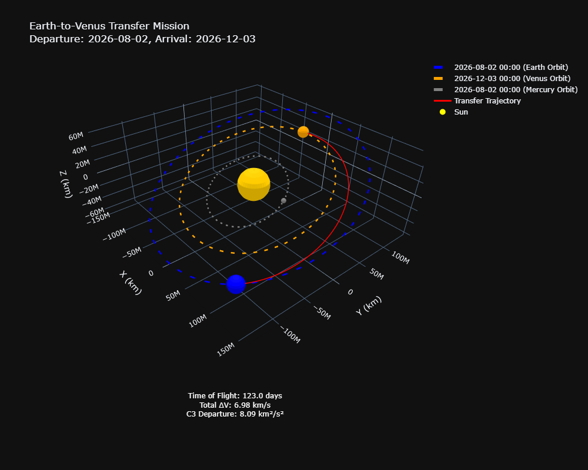

Direct transfer from Earth to Venus.
Trajectory from one planet can be calculated with the following sequence:
- Determine the position of the departure planet at time T1. Call this position R1.
- Determine the position of the arrival planet at time T2. Call this position R2.
- Find a trajectory starting at position R1 at the time T1 and ending at position R2 at time T2. The travel time is T2 - T1.
In practice, what we want to minimise is the velocity change, or ΔV. Often mission analysts minimise the escape infinite velocity and the total ΔV required for orbit changes.
For a direct transfer, we would try to minimise the infinite velocity, which is the square root of the escape C3, plus the planet orbit insertion ΔV, which is a function of the arrival C3. This leads to the core of interplanetary trajectory design: Find the trajectory that gives a minimal total ΔV1.
Repeat the inputs of Lambert’s problem: time T1 and time T2. An optimisation sequence could look like this:
Perform a loop in time T1 for all dates in selected launch year
• For this time T1, determine the position of the departure planet: R1
• Perform a loop in time T2 for all dates in selected arrival year
– For this time T2, determine the position of the arrival planet: R2
– Using a Lambert solver, calculate a trajectory between R1 and R2 for which the transfer time is (T2–T1)
– Based on the departure and arrival infinite velocities, calculate the departure and arrival C3
– From the departure and arrival C3, calculate the total ΔV
– If the ΔV of this solution is lower than any previously found solution, remember the times T1 and T2
• End loop in time T2
End loop in time T1Python code:
class MissionOptimiser:
def __init__(self, departure_body, arrival_body,
departure_year, arrival_year,
min_tof_days=60, max_tof_days=300,
departure_step_days=5, arrival_step_days=5):
"""
Initialise the mission optimiser.
Parameters:
-----------
departure_body : poliastro.bodies
The body to depart from (e.g., Earth)
arrival_body : poliastro.bodies
The body to arrive at (e.g., Venus)
departure_year : int
The year of departure
arrival_year : int
The year of arrival
min_tof_days : int
Minimum time of flight in days
max_tof_days : int
Maximum time of flight in days
departure_step_days : int
Step size for departure date search in days
arrival_step_days : int
Step size for arrival date search in days
"""
self.departure_body = departure_body
self.arrival_body = arrival_body
self.departure_year = departure_year
self.arrival_year = arrival_year
self.min_tof_days = min_tof_days
self.max_tof_days = max_tof_days
self.departure_step_days = departure_step_days
self.arrival_step_days = arrival_step_days
self.results = []
self.best_solution = None
def _generate_date_range(self, year, step_days):
"""
Generate a range of dates for the given year with the specified step size.
"""
start_date = Time(f"{year}-01-01", scale="tdb")
end_date = Time(f"{year+1}-01-01", scale="tdb") - 1 * u.day
date_range = []
current_date = start_date
while current_date <= end_date:
date_range.append(current_date)
current_date = current_date + step_days * u.day
return date_range
def _calculate_delta_v(self, c3_departure, c3_arrival):
"""
Calculate total delta-V for the mission.
This is a simplified model. In reality, the calculation would depend on:
- The specific launch vehicle
- The parking orbit at departure
- The desired orbit at arrival
- Any deep space maneuvers
"""
delta_v_departure = np.sqrt(c3_departure) # km/s
arrival_body_mu = self.arrival_body.k.to(u.km**3 / u.s**2).value
arrival_body_radius = self.arrival_body.R.to(u.km).value
orbit_altitude = 300 # km, typical orbit altitude
orbit_radius = arrival_body_radius + orbit_altitude
v_inf_arrival = np.sqrt(c3_arrival) # km/s
v_periapsis = np.sqrt(v_inf_arrival**2 + 2 * arrival_body_mu / orbit_radius)
v_circular = np.sqrt(arrival_body_mu / orbit_radius)
delta_v_arrival = v_periapsis - v_circular
total_delta_v = delta_v_departure + delta_v_arrival
return delta_v_departure, delta_v_arrival, total_delta_v
def _solve_lambert(self, r1, r2, tof):
"""
Solve Lambert's problem and handle potential errors.
"""
try:
v1, v2 = vallado_lambert.lambert(Sun.k, r1, r2, tof)
return v1, v2, None
except Exception as e:
return None, None, str(e)
def optimise(self):
print("Starting trajectory optimisation...")
departure_dates = self._generate_date_range(self.departure_year, self.departure_step_days)
arrival_dates = self._generate_date_range(self.arrival_year, self.arrival_step_days)
print(f"Analysing {len(departure_dates)} departure dates and {len(arrival_dates)} arrival dates")
print(f"Total combinations to evaluate: {len(departure_dates) * len(arrival_dates)}")
best_delta_v = float('inf')
best_solution = None
for i, t1 in enumerate(departure_dates):
if i % 10 == 0:
print(f"Processing departure date {i+1}/{len(departure_dates)}: {t1.iso}")
departure_ephem = Ephem.from_body(self.departure_body, Time([t1]))
departure_orbit = Orbit.from_ephem(Sun, departure_ephem, t1)
r1, v_dep = departure_orbit.rv()
r1 = r1.to(u.km)
v_dep = v_dep.to(u.km / u.s)
for t2 in arrival_dates:
tof = t2 - t1
tof_days = tof.to(u.day).value
if tof_days < self.min_tof_days or tof_days > self.max_tof_days:
continue
arrival_ephem = Ephem.from_body(self.arrival_body, Time([t2]))
arrival_orbit = Orbit.from_ephem(Sun, arrival_ephem, t2)
r2, v_arr = arrival_orbit.rv()
r2 = r2.to(u.km)
v_arr = v_arr.to(u.km / u.s)
tof_seconds = tof.to(u.s)
v1, v2, error = self._solve_lambert(r1, r2, tof_seconds)
if error:
continue
v_inf_dep = v1 - v_dep
v_inf_arr = v2 - v_arr
v_inf_dep_mag = np.sqrt(np.sum(v_inf_dep.value**2))
v_inf_arr_mag = np.sqrt(np.sum(v_inf_arr.value**2))
c3_dep = v_inf_dep_mag**2
c3_arr = v_inf_arr_mag**2
v_inf_unit = v_inf_dep.value / v_inf_dep_mag
coord_gcrs = SkyCoord(
x=v_inf_unit[0],
y=v_inf_unit[1],
z=v_inf_unit[2],
representation_type='cartesian',
frame=GCRS(obstime=t1)
)
declination = coord_gcrs.spherical.lat.to(u.deg).value
delta_v_dep, delta_v_arr, total_delta_v = self._calculate_delta_v(c3_dep, c3_arr)
result = {
'departure_date': t1.iso,
'arrival_date': t2.iso,
'tof_days': tof_days,
'c3_departure': c3_dep,
'c3_arrival': c3_arr,
'v_inf_departure': v_inf_dep_mag,
'v_inf_arrival': v_inf_arr_mag,
'declination': declination,
'delta_v_departure': delta_v_dep,
'delta_v_arrival': delta_v_arr,
'total_delta_v': total_delta_v
}
self.results.append(result)
if total_delta_v < best_delta_v:
best_delta_v = total_delta_v
best_solution = result
self.best_solution = best_solution
print("Optimisation complete!")
print(f"Total valid trajectories found: {len(self.results)}")
if best_solution:
print("\nBest Solution:")
print(f"Departure: {best_solution['departure_date']}")
print(f"Arrival: {best_solution['arrival_date']}")
print(f"Time of Flight: {best_solution['tof_days']:.1f} days")
print(f"C3 Departure: {best_solution['c3_departure']:.2f} km²/s²")
print(f"C3 Arrival: {best_solution['c3_arrival']:.2f} km²/s²")
print(f"Declination: {best_solution['declination']:.2f} degrees")
print(f"Total Delta-V: {best_solution['total_delta_v']:.2f} km/s")
return self.resultsThe code above produces the following output:
Starting trajectory optimisation...
Analysing 122 departure dates and 122 arrival dates
Total combinations to evaluate: 14884
Processing departure date 1/122: 2026-01-01 00:00:00.000
Processing departure date 11/122: 2026-01-31 00:00:00.000
Processing departure date 21/122: 2026-03-02 00:00:00.000
Processing departure date 31/122: 2026-04-01 00:00:00.000
Processing departure date 41/122: 2026-05-01 00:00:00.000
Processing departure date 51/122: 2026-05-31 00:00:00.000
Processing departure date 61/122: 2026-06-30 00:00:00.000
Processing departure date 71/122: 2026-07-30 00:00:00.000
Processing departure date 81/122: 2026-08-29 00:00:00.000
Processing departure date 91/122: 2026-09-28 00:00:00.000
Processing departure date 101/122: 2026-10-28 00:00:00.000
Processing departure date 111/122: 2026-11-27 00:00:00.000
Processing departure date 121/122: 2026-12-27 00:00:00.000
Optimisation complete!
Total valid trajectories found: 1722
Best Solution:
Departure: 2026-08-02 00:00:00.000
Arrival: 2026-12-03 00:00:00.000
Time of Flight: 123.0 days
C3 Departure: 8.09 km²/s²
C3 Arrival: 25.11 km²/s²
Declination: 4.14 degrees
Total Delta-V: 6.98 km/s
Book values:
Departure: 2026-07-31
Arrival: 2026-12-01
C3 Departure: 7.3 km²/s²
C3 Arrival: 23.6 km²/s²
Declination: 2.0°
Time of Flight: 123 days
Optimiser best solution:
Departure: 2026-08-02 00:00:00.000
Arrival: 2026-12-03 00:00:00.000
C3 Departure: 8.1 km²/s²
C3 Arrival: 25.1 km²/s²
Declination: 4.1°
Time of Flight: 123.0 days
Total ΔV: 6.98 km/sPlotting the results then give

from poliastro.plotting import OrbitPlotter3D
from poliastro.bodies import Sun, Earth, Venus, Mercury
from poliastro.ephem import Ephem
from poliastro.twobody import Orbit
from astropy.time import Time
from astropy import units as u
import numpy as np
from poliastro.util import time_range
import matplotlib.pyplot as plt
import plotly.graph_objects as go
from scipy.integrate import solve_ivp
def plot_mission_trajectory(optimiser):
"""
Plot the trajectory from Earth to Venus, including the Sun and Mercury.
"""
if not optimiser.best_solution:
raise ValueError("No optimisation results available. Run optimise() first.")
best = optimiser.best_solution
t_departure = Time(best['departure_date'], scale='tdb')
t_arrival = Time(best['arrival_date'], scale='tdb')
tof = t_arrival - t_departure
earth_ephem = Ephem.from_body(Earth, Time([t_departure], scale='tdb'))
venus_ephem = Ephem.from_body(Venus, Time([t_arrival], scale='tdb'))
mercury_ephem = Ephem.from_body(Mercury, Time([t_departure], scale='tdb'))
earth_orbit = Orbit.from_ephem(Sun, earth_ephem, t_departure)
venus_orbit = Orbit.from_ephem(Sun, venus_ephem, t_arrival)
mercury_orbit = Orbit.from_ephem(Sun, mercury_ephem, t_departure)
r1, v1_earth = earth_orbit.rv()
r2, v2_venus = venus_orbit.rv()
tof_seconds = tof.to(u.s)
from poliastro.iod import vallado as vallado_lambert
v1, v2 = vallado_lambert.lambert(Sun.k, r1, r2, tof_seconds)
def two_body_ode(t, y, mu):
"""
Two-body equations of motion: r, v -> a.
"""
rx, ry, rz = y[0:3]
vx, vy, vz = y[3:6]
r_norm = np.linalg.norm([rx, ry, rz])
ax, ay, az = -mu * np.array([rx, ry, rz]) / r_norm**3
return [vx, vy, vz, ax, ay, az]
mu_sun = Sun.k.to_value(u.km**3/u.s**2)
y0 = np.hstack([r1.to_value(u.km), v1.to_value(u.km/u.s)])
t_span = (0, tof.to(u.s).value)
t_eval = np.linspace(t_span[0], t_span[1], 500)
sol = solve_ivp(
two_body_ode, t_span, y0,
t_eval=t_eval, args=(mu_sun,), rtol=1e-8
)
positions = sol.y[0:3, :]
plotter = OrbitPlotter3D()
earth_time_range = time_range(t_departure, end=t_departure + 1*u.year, periods=300)
venus_time_range = time_range(t_arrival, end=t_arrival + 1*u.year, periods=300)
mercury_time_range = time_range(t_departure, end=t_departure + 1*u.year, periods=300)
earth_ephem_full = Ephem.from_body(Earth, earth_time_range)
venus_ephem_full = Ephem.from_body(Venus, venus_time_range)
mercury_ephem_full = Ephem.from_body(Mercury, mercury_time_range)
earth_full_orbit = Orbit.from_ephem(Sun, earth_ephem_full, t_departure)
venus_full_orbit = Orbit.from_ephem(Sun, venus_ephem_full, t_arrival)
mercury_full_orbit = Orbit.from_ephem(Sun, mercury_ephem_full, t_departure)
plotter.plot(earth_full_orbit, label="Earth Orbit", color="blue")
plotter.plot(venus_full_orbit, label="Venus Orbit", color="orange")
plotter.plot(mercury_full_orbit, label="Mercury Orbit", color="gray")
fig = plotter.show()
fig.add_trace(go.Scatter3d(
x=positions[0],
y=positions[1],
z=positions[2],
mode='lines',
line=dict(width=3, color='red'),
name="Transfer Trajectory"
))
fig.add_trace(go.Scatter3d(
x=[0],
y=[0],
z=[0],
mode='markers',
marker=dict(size=10, color='yellow'),
name="Sun"
))
fig.update_layout(
scene_camera=dict(
up=dict(x=0, y=0, z=1),
center=dict(x=0, y=0, z=0),
eye=dict(x=1.5, y=1.5, z=1.5)
),
title=f"Earth-to-Venus Transfer Mission<br>Departure: {t_departure.iso[:10]}, Arrival: {t_arrival.iso[:10]}",
scene=dict(
xaxis_title='X (km)',
yaxis_title='Y (km)',
zaxis_title='Z (km)'),
template="plotly_dark",
height=800,
width=1000,
annotations=[
dict(
x=0.5, y=0.01,
xref='paper', yref='paper',
text=f"Time of Flight: {best['tof_days']:.1f} days<br>Total ΔV: {best['total_delta_v']:.2f} km/s<br>C3 Departure: {best['c3_departure']:.2f} km²/s²",
showarrow=False,
font=dict(color="white", size=12),
align="center"
)
]
)
return fig
fig = plot_mission_trajectory(optimiser)
fig.show()Footnotes
Biesbroek, R., 2016. LUNAR AND INTERPLANETARY TRAJECTORIES.↩︎